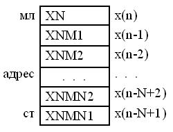

Уравнение цифрового нерекурсивного фильтра (ЦНФ), или фильтра с конечной импульсной характеристикой (КИХ или FIR – Finite Impulse Response) во временной области выглядит следующим образом:
где h(k) - коэффициенты импульсной характеристики фильтра.
Такой фильтр N-го порядка может быть представлен следующей схемой (рис. 5.1):
Рисунок 5.1 – Граф-схема цифрового нерекурсивного фильтра
При реализации ЦНФ на ЦПС важным является оптимальное распределение в памяти процессора констант и данных.
Расположение данных, представленное на рис. 5.2, позволяет воспользоваться командой DELAY (копирование в следующую по адресу ячейку), встроенной в команды LTD и MACD, для организации линии задержки. При этом вычисления следует начинать с XNMN1. Если порядок фильтра мал (не выше 5-го) можно использовать линейную программу и команды LTD или LD и MPY или MAC с аргументом типа #lk.

Рисунок 5.2 – Порядок данных в памяти для цифрового нерекурсивного фильтра
При числе коэффициентов >5 используют циклическую программу и соответствующие команды перехода, при этом порядок расположения коэффициентов в памяти данных значения не имеет.
Если коэффициенты расположены в памяти программ, то можно использовать команду MACD, но при этом по самому младшему адресу в памяти программ (с него начинается вычисление) должен располагаться коэффициент h(N-1), обозначенный как HNM1, а по старшему – h(0), обозначенный как H0.
Перед началом выполнения программы рекомендуется обнулить все ячейки предыстории (x(n-1), x(n-2), …, x(n-N+1)).
При расположении коэффициентов фильтра в памяти программ они должны располагаться в следующем порядке:
.text ; секция программы HNM1 .WORD 0 ; коэффициент фильтра h(N-1) HNM2 .WORD 0 ; коэффициент фильтра h(N-2) . . . H1 .WORD 0 ; коэффициент фильтра h(1) H0 .WORD 0 ; коэффициент фильтра h(0)
При этом предистория фильтра в памяти данных должна располагаться в следующем порядке:
.data ; секция данных YN .WORD 0 ; выход фильтра (перед XN) XN .WORD 0 ; предыстория фильтра x(n) XNM1 .WORD 0 ; предыстория фильтра x(n-1) . . . XNMN2 .WORD 0 ; предыстория фильтра x(n-N+2) XNMN1 .WORD 0 ; предыстория фильтра x(n-N+1) .WORD 0 ; свободная ячейка после x(n-N+1)
При такой реализации порядок коэффициентов и данных не может быть другим. Непосредственное программирование фильтра выполняется двумя командами:
.text ; секция программы RPTZ A, #N-1 ; A:=0, повторить команду N раз MACD *AR2-, HNM1 ; A:=A+x(n-k)*h(k),x(n-k)->x(n-k-1)
При расположении коэффициентов фильтра в памяти данных можно использовать циклическую адресацию. При этом коэффициенты и данные должны располагаться в одном порядке и выравниваться на границу кратную степени двойки и больше, чем число коэффициентов:
.data ; секция данных .ALIGN 128 ; выравнивание для N < 128 XNMN1 .WORD 0 ; предыстория фильтра x(n-N+1) XNMN2 .WORD 0 ; предыстория фильтра x(n-N+2) . . . XNM1 .WORD 0 ; предыстория фильтра x(n-1) XN .WORD 0 ; предыстория фильтра x(n) .ALIGN 128 ; выравнивание для N < 128 HNM1 .WORD 0 ; коэффициент фильтра h(N-1) HNM2 .WORD 0 ; коэффициент фильтра h(N-2) . . . H1 .WORD 0 ; коэффициент фильтра h(1) H0 .WORD 0 ; коэффициент фильтра h(0) ; ПРИМЕЧАНИЕ: порядок h(k) и x(n-k) может быть обратным, ; при этом в AR0 необходимо занести -1
Непосредственное программирование фильтра выполняется двумя командами:
.text ; секция программы RPTZ A, #N-1 ; A:=0, повторить команду N раз MAC *AR2+0%,*AR3+0%, A ; A:=A+x(n-k)*h(k)